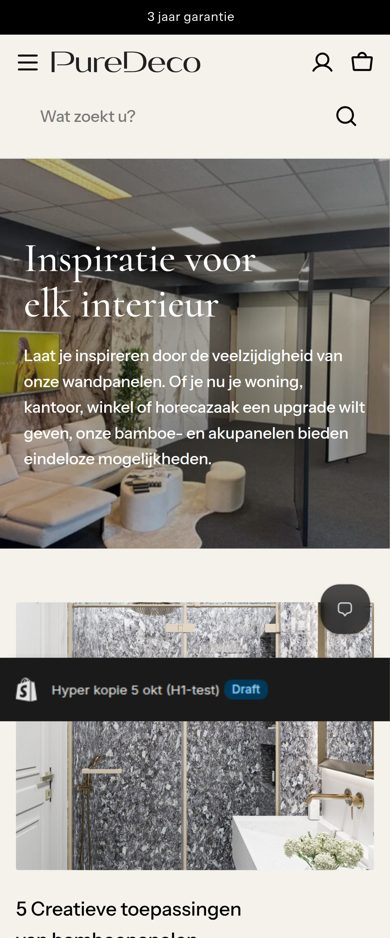
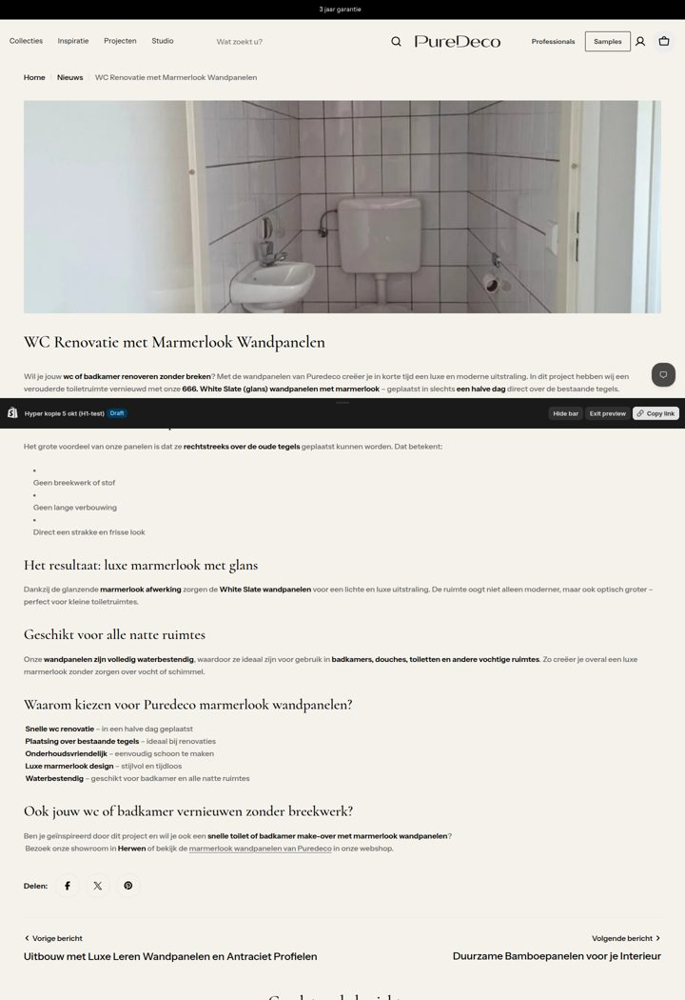
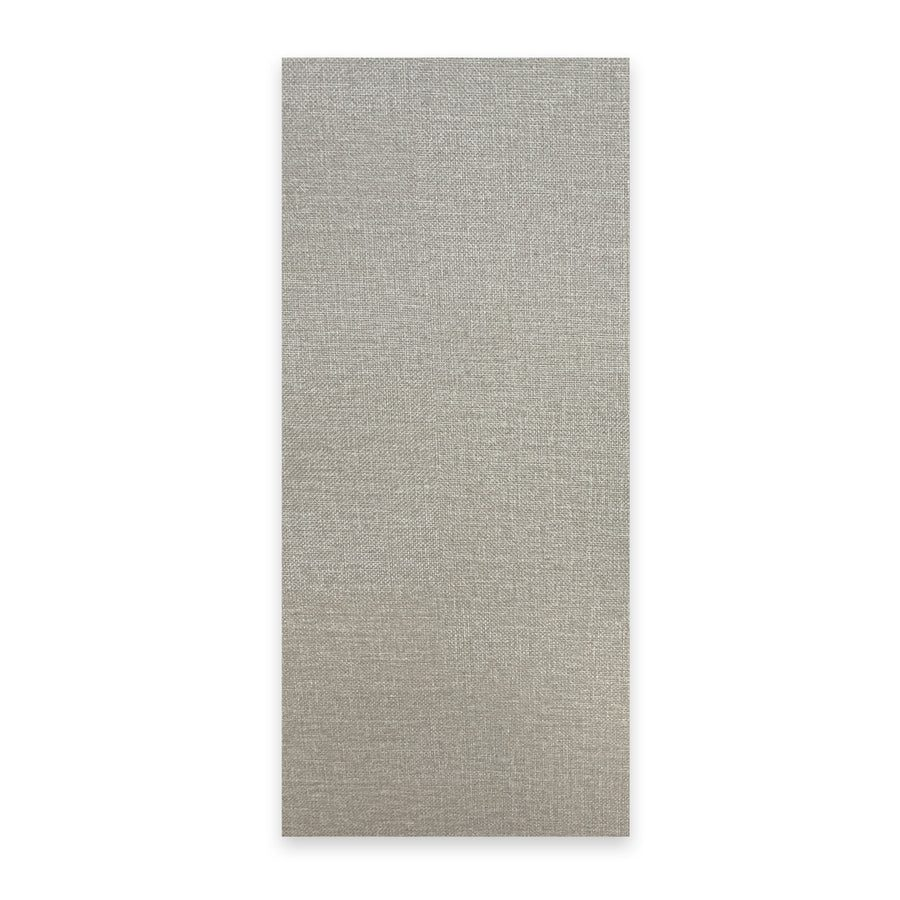
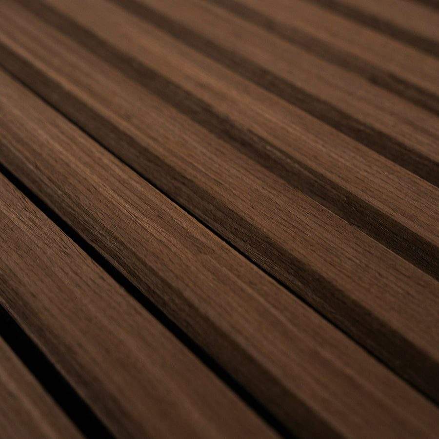
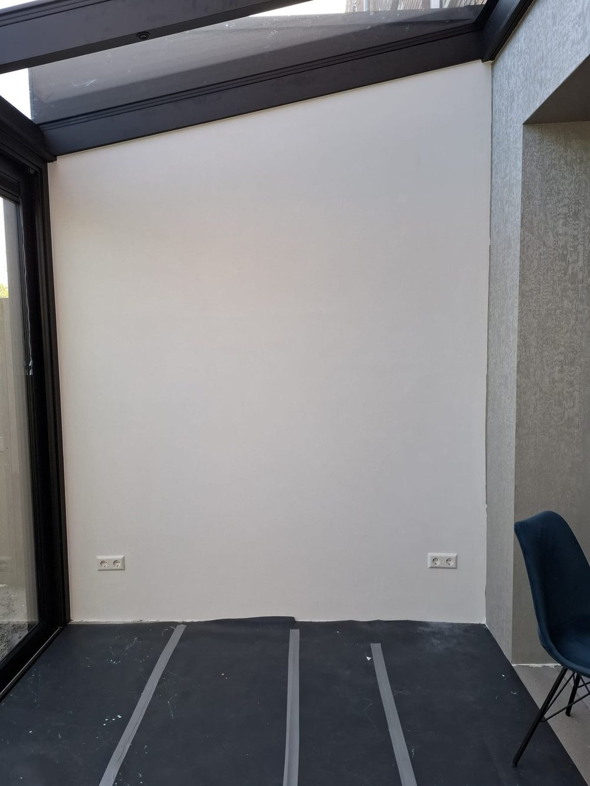
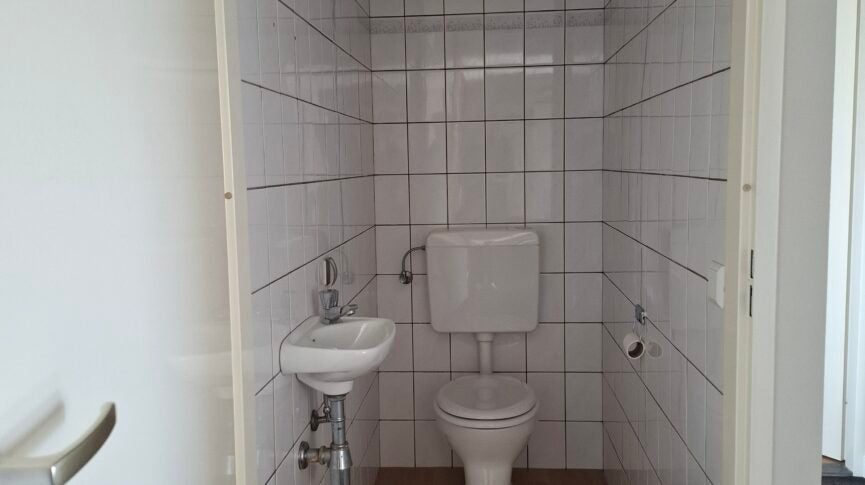
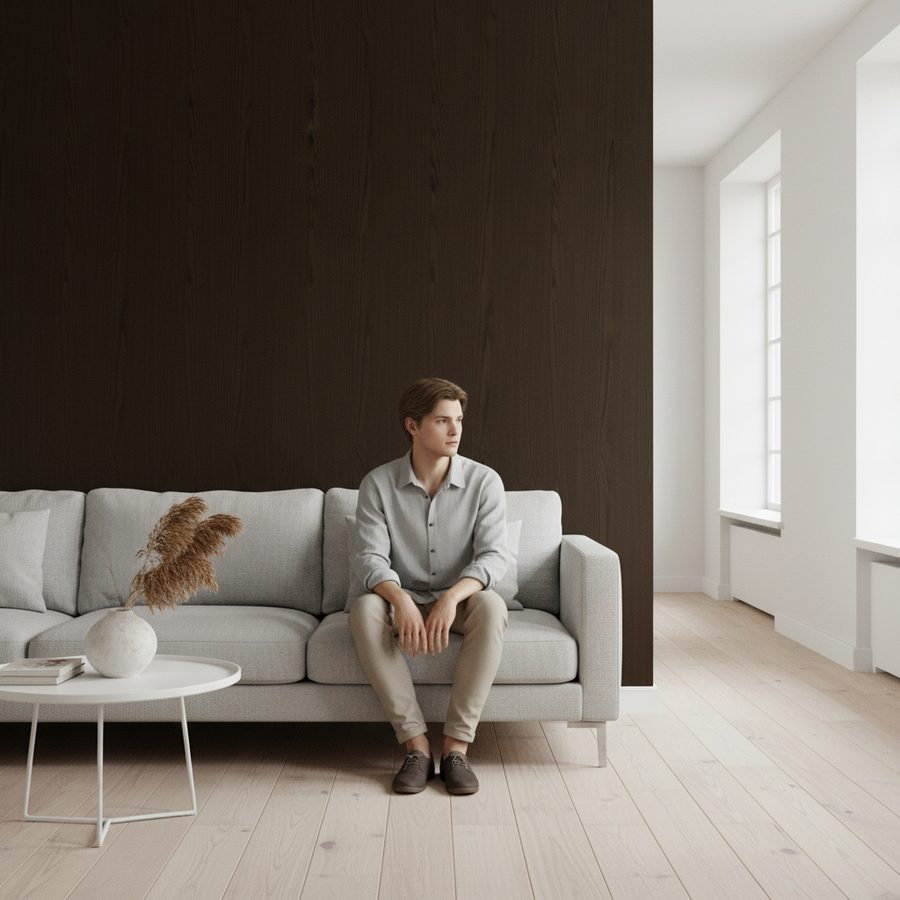

Inspiratie die bij PureDeco past
De pagina gebruikt nu nog de standaardopmaak van het thema: groene knoppen, een donkere foto met witte tekst, overal dezelfde datum en grijze vlakken waar foto's laden. Daarnaast staan projecten en algemene blogs door elkaar. Hieronder drie richtingen in de huisstijl, met de echte artikelen en foto's. Visualisaties krijgen het label 'Visualisatie'; echte foto's 'Echte foto'.
·Zo is het nu

Overzicht, mobiel

Artikel, desktop
Wat niet past
- Groene knoppen 'Lees meer': komen nergens anders op de site voor.
- Donkere kopfoto met witte tekst; onscherp (865 px breed) en een kantoor in aanbouw.
- Titels in de standaardletter, niet in de PureDeco-serif.
- Overal '9 mrt. 2026': alle artikelen zijn op dezelfde dag geïmporteerd.
- Projecten en blogs door elkaar onder de naam 'Nieuws'.
- Artikel: brede 3:1-uitsnede van een 'voor'-foto, lege opsommingstekens, deelknoppen, groene knoppen bij 'Gerelateerde berichten'.
Wat de inhoud nodig heeft (winkeldata, na akkoord)
- '5 Creatieve toepassingen' heeft exact dezelfde tekst als 'Tips voor het onderhouden'. Google ziet dat als kopie.
- Na-foto's ontbreken: bij de wc staat alleen de oude situatie, bij de uitbouw een foto tijdens het werk.
- Niet gecontroleerde beweringen in 'Duurzame bamboepanelen' (B1-brandklasse, montage uit handen, metaal- en spiegelafwerking, gerecyclede toplaag): laten controleren of weghalen.
- Oude links in de teksten (puredeco.nl/product/marmer/, /samples/ …) naar de huidige collecties zetten.
- Geen samenvattingen; visualisaties in artikelen zonder label.
AJournaladvies · rustig, redactioneel, werkt met wat er nu is
Zoals een interieurmagazine: tekstkop zonder foto, één uitgelicht project, projecten in een rustig raster en advies als genummerde lijst zonder beeld (die foto's zijn de zwakste). Geen datums, geen knoppen: tekstlinks zoals in de rest van de site.
CollectiesInspiratieProjectenStudio
PureDecoProfessionalsSamples
Inspiratie
Wanden in het echt
Projecten van klanten en wat we onderweg leerden. Welk decor, welke uitvoering, en hoe de wand eruitziet als hij klaar is.
AllesProjecten · 4Advies · 2
Project · Werkplek
Kantoor in Japanse stijl
Japandi-stof in jade, gecombineerd met akupanelen in walnoot en zwarte tussenprofielen. Rustig, warm en beter voor de akoestiek.


619 Jade · Akupaneel 302 Walnut
Bekijk het project →
Project · Keuken
Keukenwand in Pandora Slate
670 Pandora Slate · glans

Foto tijdens het werk · na-foto nodigProject · Uitbouw
Uitbouw met leren wandpanelen
Leer · antraciet profielen

Na-foto nodigProject · Toilet
Toilet vernieuwd over de tegels
666 White Slate · glans
01Je wandpanelen onderhouden
Schoonmaken, vocht en ventilatie, wat je beter niet gebruikt.Lezen →
02Waarom een kern van bamboe
Na controle van de beweringen in het huidige artikel.Lezen →
- Past direct bij homepage, productpagina en footer (zelfde letters, lijnen en tekstlinks).
- Werkt met de huidige artikelen; zwakke foto's vallen weg in de adviesrij.
- Meer projecten later: het raster groeit vanzelf mee.
- Met 4 projecten is het nog een korte pagina.
- De wc en uitbouw hebben een goede na-foto nodig (tot die tijd: kantoor en keuken bovenaan).
BPer ruimtecommercieel · meeste beeld · goed voor 'wandpanelen badkamer/keuken'
Bezoekers kiezen eerst hun ruimte. Elke ruimte toont het project, de decors die daar passen en het advies dat erbij hoort. Sterke beelden, maar die zijn grotendeels visualisaties.
CollectiesInspiratieProjectenStudio
PureDecoProfessionalsSamples
Inspiratie
Welke ruimte ga je vernieuwen?
Badkamer & toilet1 project · marmerlook, steen →
Echte foto
Keuken1 project · marmerlook →

VisualisatieWoonkamer & uitbouw1 project · hout, leer →
Echte foto
Werkplek1 project · Japandi, akupanelen →
- Sluit aan op hoe mensen zoeken ('wandpanelen badkamer', 'keukenwand').
- Elke ruimte linkt door naar passende decors: meer verkoop vanuit inspiratie.
- Leunt op visualisaties: minder 'echt' dan A.
- Per ruimte maar één project; voelt nog leeg tot er meer zijn.
- Meer bouwwerk (per ruimte een pagina-indeling en decorlijst).
CVoor & nameest overtuigend · vraagt na-foto's per project
Projecten als vergelijking: oude wand links, nieuwe wand rechts, met een schuifje. Precies het verhaal van PureDeco (over de tegels, zonder breekwerk). De wc heeft al een goede voor-foto; alleen de na-foto ontbreekt.
CollectiesInspiratieProjectenStudio
PureDecoProfessionalsSamples
Na-foto van de klant
↔
VoorNa
Project · Toilet
Toilet vernieuwd over de tegels
666 White Slate in glans, direct over de bestaande tegels geplaatst. Geen breekwerk.
RuimteToilet
Decor666 White Slate · glans
OndergrondBestaande tegels
Bekijk het project →
- Het sterkste bewijs dat er is: echte wand, echt resultaat.
- Werkt ook als blok op homepage en productpagina.
- Kan pas als er per project een voor- én na-foto vanuit dezelfde hoek is.
- Nu voor geen enkel project compleet.
·Het artikel zelf (bij elke keuze)
Eén vaste opbouw voor projecten: beeld en feiten bovenaan, de gebruikte decors met een staal-knop, smalle leeskolom, onderaan twee andere projecten in dezelfde kaartstijl. Geen deelknoppen, geen groene knoppen.
CollectiesInspiratieProjectenStudio
PureDecoProfessionalsSamples
Home · Inspiratie · Kantoor in Japanse stijl
Project · Werkplek
Kantoor in Japanse stijl
RuimteKantoor
Wand619 Jade (Japandi)
AccentAkupaneel 302 Walnut
AfwerkingZwarte tussenprofielen
Gebruikt in dit project
Het verhaal
Rust in de werkplek
De bestaande tekst van het artikel, opgeschoond: geen vetgedrukte zoekwoorden, kopjes in de serif, opsommingen als nette lijst. Echte foto's als galerij tussen de tekst.
Project · Keuken
Keukenwand in Pandora Slate
Project · Uitbouw
Uitbouw met leren wandpanelen
·A op mobiel
☰PureDeco⌕
Inspiratie
Wanden in het echt
Projecten van klanten en wat we onderweg leerden.
AllesProjectenAdvies
Echte foto
Project · Werkplek
Kantoor in Japanse stijl
619 Jade · Akupaneel 302 Walnut
Echte foto
Project · Keuken
Keukenwand in Pandora Slate
Advies
A, Journal. Het past direct bij de rest van H1-test en werkt met wat er nu is. Ik bouw het in het thema (overzicht en artikel), de URL's blijven gelijk. Daarna, met jouw akkoord, de inhoud opschonen: dubbel artikel, oude links, niet gecontroleerde beweringen en de blognaam 'Nieuws' → 'Inspiratie' (alleen de naam, niet de URL).
Zodra er na-foto's zijn van de wc en de uitbouw, kan C (voor & na) er als blok bij, bovenaan de pagina en op de homepage.
Jouw keuzes
- A, B of C (of A nu en C later)?
- Mag ik de inhoud opschonen (dubbel artikel, links, beweringen, blognaam)?
- Heb je na-foto's van de wc en de uitbouw, en een scherpere foto van de keuken?
- Welke kleur leer is gebruikt in de uitbouw?